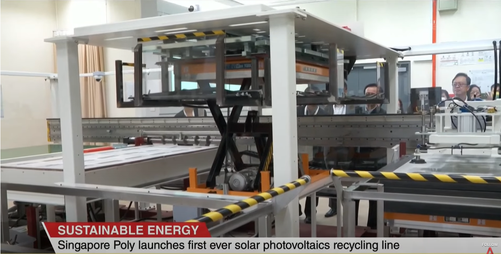
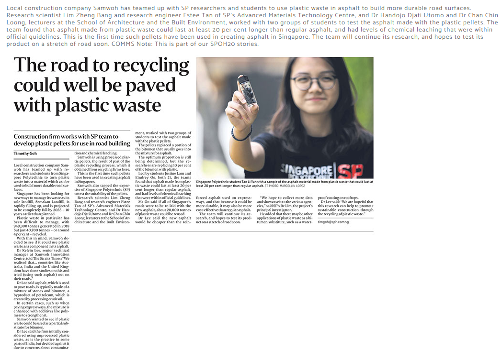
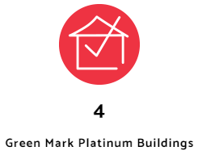

SP launched Singapore's 1st solar photovoltaics recycling system that incorporates a machine for dismantling solar panels so that valuable materials like silver and glass can be recycled. The pilot project aims to recycle up to 80 panels daily with a potential recovery rate of 95%. Dr. Thong Ta Xuan, a Senior Research Scientist at TIE, was interviewed regarding the project. In addition, SP has established two labs, the SP-Sembcorp Solar PV Research Lab and the SP-CHINT Smart Electrical Power Training Laboratory, to advance research and development in solar energy.

Samwoh, a local construction company, collaborated with researchers and students from SP to create more resilient road surfaces using plastic waste in asphalt. The team, which included research scientists and engineers from SP's Advanced Materials Technology Centre and lecturers from the School of Architecture and the Built Environment, worked with two groups of students to test the asphalt made with plastic pellets. The study discovered that the plastic-based asphalt could last up to 20% longer than traditional asphalt, and its chemical leaching levels were in line with official standards. The team plans to continue its research and test its product on a road segment soon.

T18A, T18B, T3B, and the SP Sports Arena have received the Green Mark Platinum certification, meaning that they meet the highest standards of sustainability and energy efficiency set by the Building and Construction Authority. It considers factors such as energy and water efficiency, sustainable practices, and indoor environmental quality to evaluate the building's design, construction, and operation. Futhermore,here are continuous efforts to certify all 22 buildings in SP by 2025.